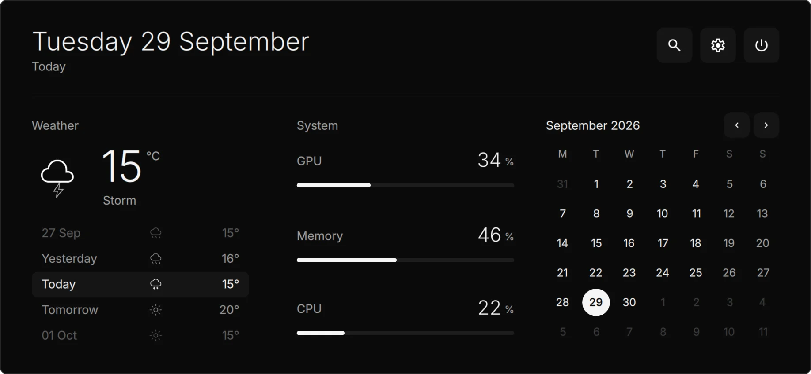
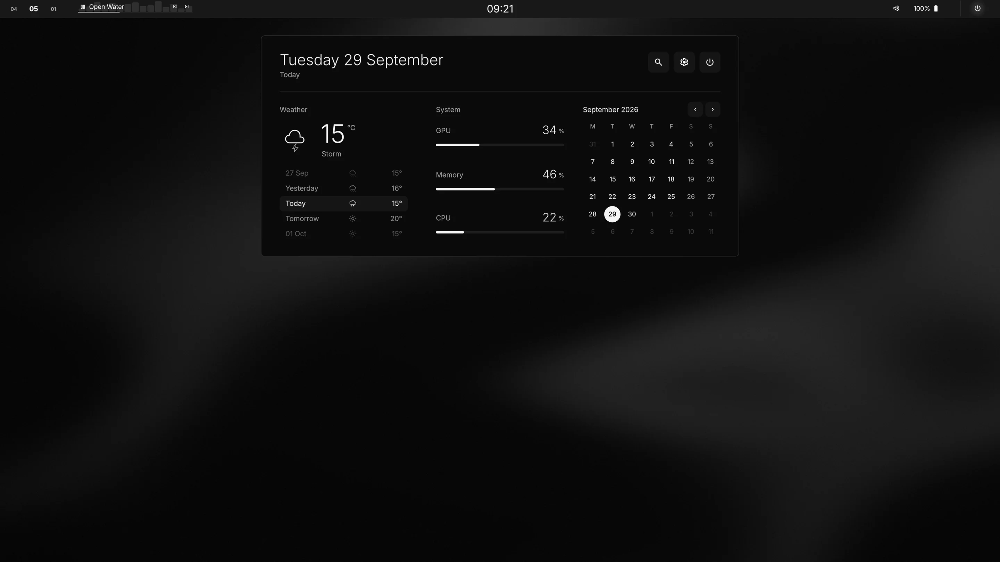
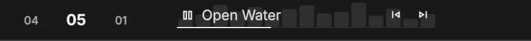
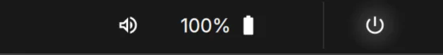
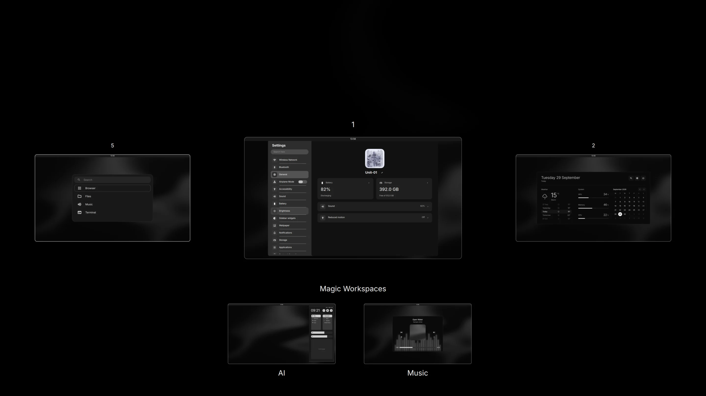
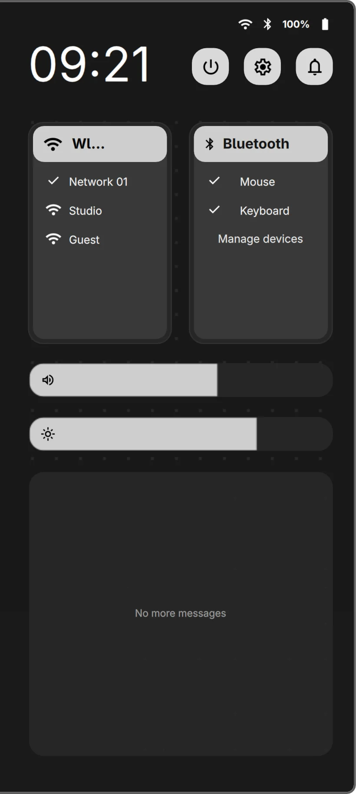
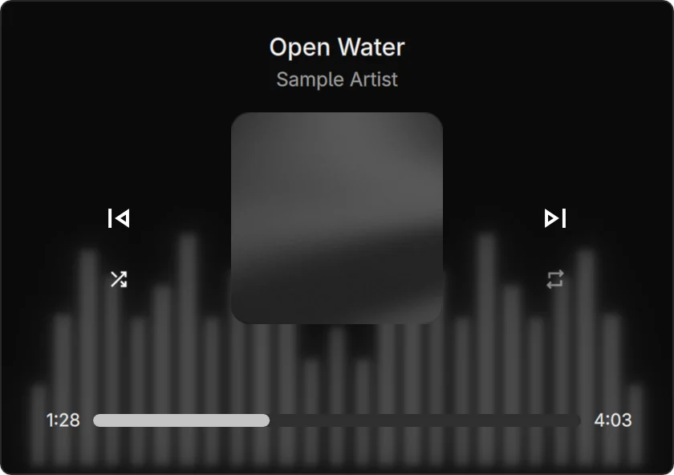
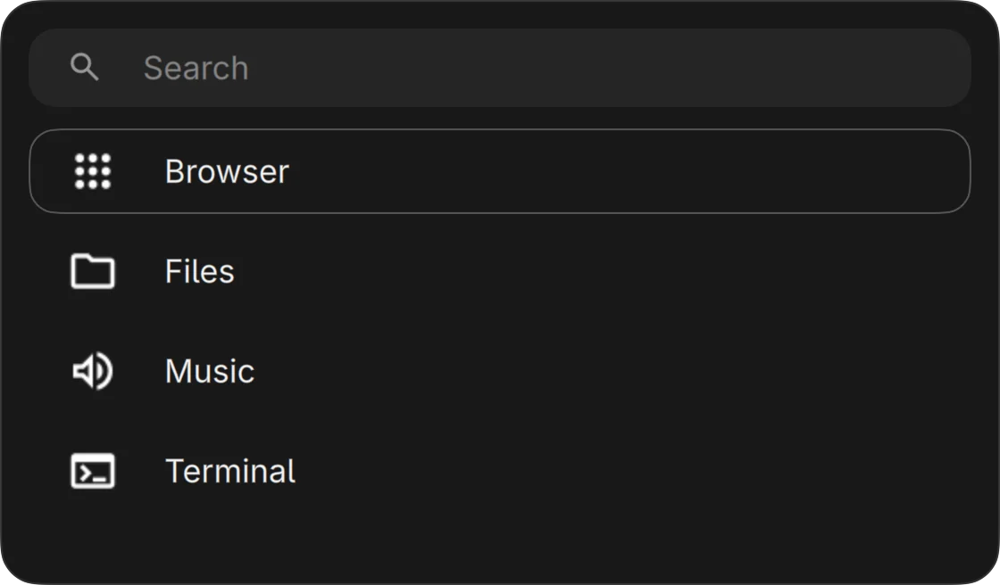
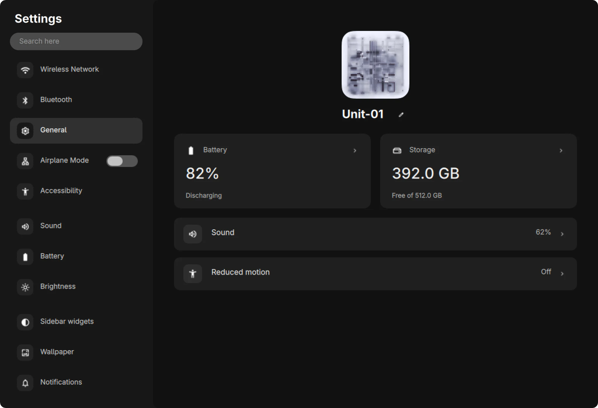
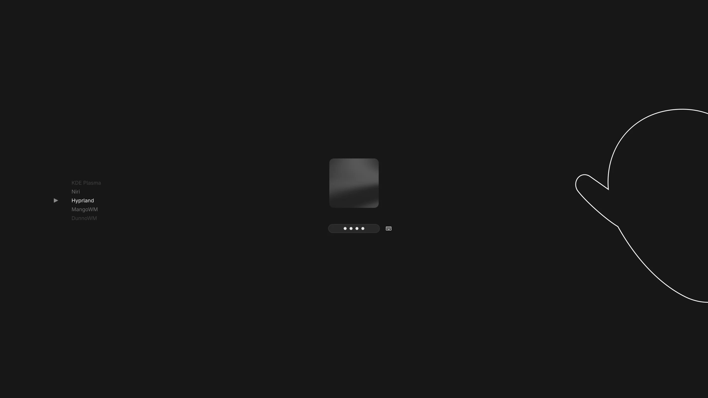

Your day, under the clock.
Dates, weather and live system readings.

A monochrome shell for Arch Linux. Free, open source and built with Quickshell.

Desktops, clock, volume, battery and power. Media appears only while something is playing.


Press Super and Tab. Scroll to look around, click to go there. Magic Workspaces sit just below.

Dates, weather and live system readings.

Network, Bluetooth, volume, brightness and notifications.

Artwork over a live spectrum of whatever is playing.

Super and Space opens every app you have installed.

Fourteen pages and one search field. Network, sound, power, wallpaper and your top bar layout.

A login theme with your sessions, your picture and nothing else.

For Arch Linux with Hyprland and Quickshell.
git clone https://github.com/dsksnkz/ghOSt.git
cd ghOSt
./install.shYour existing configs are backed up first. ./install.sh --restore puts them back.